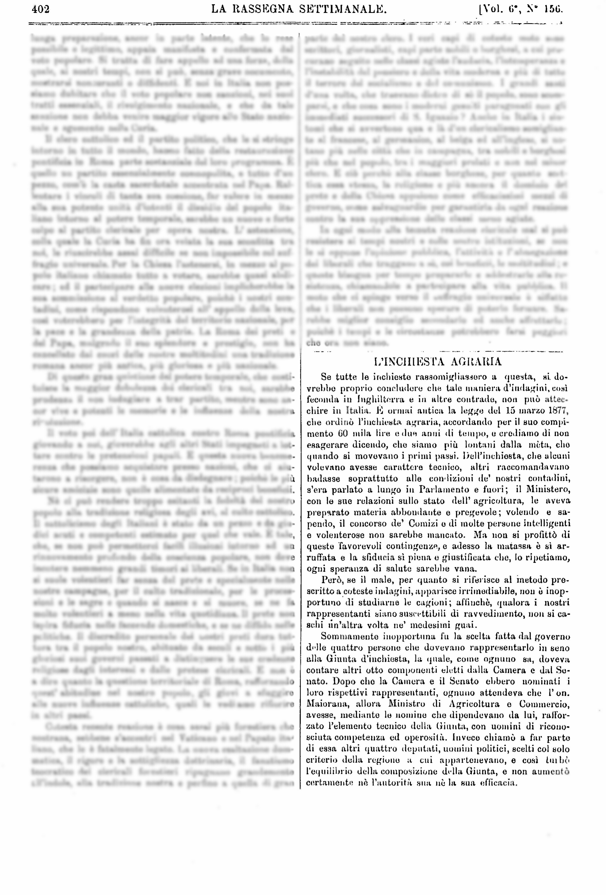
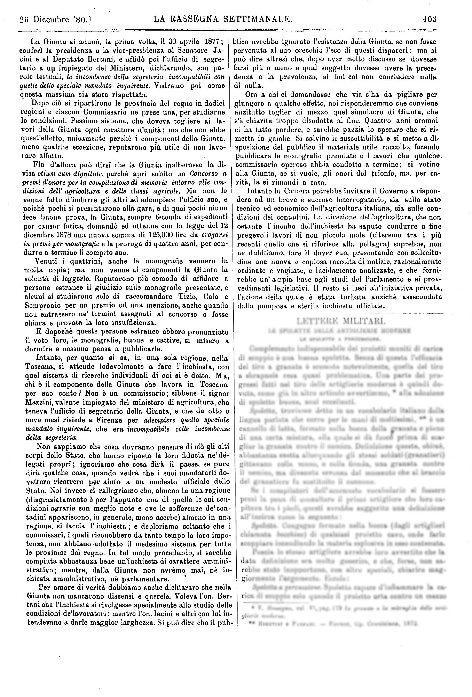

L'INCHIESTA AGRARIA


Naviga tra i paragrafi
[1]Se tutte le inchieste rassomigliassero a questa, si do-
[2]vrebbe proprio concludere che tale maniera d'indagini, così
[3]feconda in Inghilterra e in altre contrade, non può attec-
[4]chire in Italia. È ormai antica la legge del 15 marzo 1877,
[5]che ordinò l'inchiesta agraria, accordando per il suo compi-
[6]mento 60 mila lire e due anni di tempo, e crediamo di non
[7]esagerare dicendo , che siamo più lontani dalla mèta , che
[8]si movevano i primi passi. Dell'inchiesta, che alcuni
[9]volevano avesse carattere tecnico, altri raccomandavano
[10]badasse soprattutto alle condizioni de' nostri contadini,
[11]s'era parlato a lungo in Parlamento e fuori; il Ministero,
[12]con le sue relazioni sullo stato dell'agricoltura, le aveva
[13]preparato materia abbondante e pregevole; volendo e sa-
[14]pendo, il concorso de' Comizi o di molte persone intelligenti
[15]e volenterose non sarebbe mancato. Ma non si profittò di
[16]queste favorevoli contingenze, e adesso la matassa è sì ar-
[17]ruffata e la sfiducia sì piena e giustificata che, lo ripetiamo,
[18]ogni speranza di salute sarebbe vana.
[19]Però, se il male, per quanto si riferisce al metodo pre-
[20]scritto a coteste indagini, apparisce irrimediabile, non è inop-
[21]portuno di studiarne le cagioni; affinchè, qualora i nostri
[22] rappresentanti siano suscettibili di ravvedimento, non si ca-
[23]schi un'altra volta ne' medesimi guai.
[24]Sommamente inopportuna fu la scelta fatta dal governo
[25]delle quattro persone che dovevano rappresentarlo in seno
[26]alla Giunta d'inchiesta, la quale, come ognuno sa, doveva
[27]contare altri otto componenti eletti dalla Camera e dal Se-
[28]nato. Dopo che la Camera e il Senato ebbero nominati i
[29]loro rispettivi rappresentanti , ognuno attendeva che l'on.
[30]Maiorana , allora Ministro di 'Agricoltura e Commercio,
[31]avesse, mediante le nomine che dipendevano da lui, raffor-
[32]zato l'elemento tecnico della Giunta, con uomini di ricono-
[33]sciuta competenza ed operosità. Invece chiamò a far parte
[34]di essa altri quattro deputati, uomini politici, scelti col solo
[35]criterio della regione a cui appartenevano, e così turbò
[36]l'equilibrio della composizione della Giunta, e non aumentò
[37]certamente nè l'autorità sua nè la sua efficacia.
Naviga tra i paragrafi
[38]La Giunta si adunò, la prima volta, il 30 aprile 1877;
[39]conferì la presidenza e la vice-presidenza al Senatore Ja-
[40]cini e al Deputato Bertani, e affidò poi l'ufficio di segre-
[41]tario a un impiegato del Ministero, dichiarando, son parole testuali, le incombenze della segreteria incompatibili con
[42]quelle dello speciale mandato inquirente . Vedremo poi come
[43]questa massima sia stata rispettata.
[44]Dopo ciò si ripartirono le provincie del regno in dodici
[45]regioni e ciascun Commissario ne prese una, per studiarne
[46]le condizioni. Pessimo sistema, che doveva togliere ai la-
[47]vori della Giunta ogni carattere d'unità; ma che non ebbe
[48]quest'effetto, unicamente perché i componenti della Giunta,
[49]meno qualche eccezione, reputarono più utile di non lavo-
[50]rare affatto.
[51]Fin d'allora può dirsi che la Giunta inalberasse la di-
[52]visa otium cum dignitate, perché aprì subito un Concorso a
[53]premi d'onore per la compilazione di memorie intorno alle con-
[54]dizioni dell''agricoltura e delle classi agricole. Ma non le
[55]venne fatto d'indurre gli altri ad adempiere l'ufficio suo, e
[56]poiché pochi si presentarono alla gara, e di quei pochi niuno
[57]fece buona prova, la Giunta, sempre feconda di espedienti
[58]per cansar fatica , domandò ed ottenne con la legge del 12
[59]dicembre 1878 una nuova somma di125.000 lire da erogarsi
[60]in premi per monografie e la proroga di quattro anni, per con-
[61]durre a termine il compito suo.
[62]Venuti i quattrini, anche le monografie vennero in
[63]molta copia; ma non venne ai componenti la Giunta la
[64]volontà di leggerle. Reputarono più comodo di affidare a
[65]persone estranee il giudizio sulle monografie presentate, e
[66]alcuni si studiarono solo di raccomandare Tizio, Caio e
[67]Sempronio per un premio od una menzione, anche quando
[68]non entrassero ne' termini assegnati al Concorso o fosse
[69]chiara e provata la loro insufficienza.
[70]E dopoché queste persone estranee ebbero pronunziato
[71]il voto loro, le monografie, buone e cattive, si misero a
[72]dormire e nessuno pensa a pubblicarle.
[73]Intanto, per quanto si sa, in una sola regione, nella
[74]Toscana, si attende lodevolmente a fare l'inchiesta, con
[75]quel sistema di ricerche individuali di cui si è detto. Ma,
[76]chi è il componente della Giunta che lavora in Toscana
[77]per suo conto? Non è un Commissario; sibbene il signor
[78]Mazzini, valente impiegato del ministero di 'agricoltura, che
[79]teneva l'ufficio di segretario della Giunta, e che da otto o
[80]nove mesi risiede a Firenze per adempiere quello speciale
[81]mandato inquirente, che era incompatibile colle incombenze
[82]della segreteria.
[83]Non sappiamo che cosa dovranno pensare di ciò gli alti
[84]corpi dello Stato, che hanno riposto la loro fiducia ne' de-
[85]legati propri; ignoriamo che cosa dirà il paese, se pure
[86]dirà qualche cosa, quando vedrà che i suoi mandatari do-
[87]vettero ricorrere per aiuto a un modesto ufficiale dello
[88]Stato. Noi invece ci rallegriamo che, almeno in una regione
[89](disgraziatamente è per l'appunto una di quelle le cui con-
[90]dizioni agrarie son meglio note e ove le sofferenze de' con-
[91]tadini appariscono, in generale, meno acerbe) almeno in una
[92]regione, si faccia l'inchiesta; e deploriamo soltanto che i
[93]commissari, i quali riconobbero da tanto tempo la loro impo-
[94]tenza, non abbiano adottato il medesimo sistema per tutte
[95]le provincie del regno. In tal modo procedendo, si sarebbe
[96]compiuta abbastanza bene un'inchiesta di carattere ammini-
[97]strativo; mentre, dalla Giunta non avremo mai, né in-
[98]chiesta amministrativa, né parlamentare.
[99]Per amore di verità dobbiamo anche dichiarare che nella
[100]Giunta non mancarono dissensi e querele. Voleva l'on. Ber-
[101]tani che l'inchiesta si rivolgesse specialmente allo studio delle
[102]condizioni de' lavoratori; mentre l'on. Jacini e altri con lui in-
[103]tendevano a darle maggior larghezza. Si può dire che il pub-
[104]blico avrebbe ignorato l'esistenza della
[105]Giunta, se non fosse
[106]pervenuta al suo orecchio l'eco di questi dispareri ; ma si
[107]può dire altresì che, dopo aver molto discusso se dovesse
[108]farsi più o meno e qual soggetto dovesse avere la prece-
[109]denza e la prevalenza, si finì col non concludere nulla
[110]di nulla.
[111]Ora a chi ci domandasse che via s'ha da pigliare per
[112]giungere a qualche effetto, noi risponderemmo che conviene
[113]anzitutto toglier di mezzo quel simulacro di Giunta, che
[114]s'è chiarita troppo disadatta al fine. Quattro anni oramai
[115]ci ha fatto perdere, e sarebbe pazzia lo sperare che si ri-
[116]metta in gambe. Si salvino le suscettibilità e si metta a di-
[117]sposizione del pubblico il materiale utile raccolto, facendo
[118]pubblicare le monografie premiate e i lavori che qualche
[119]commissario operoso abbia condotto a termine; si votino
[120]alla Giunta, se si vuole, gli onori del trionfo, ma, per ca-
[121]rità, la si rimandi a casa.
[122]Intanto la Camera potrebbe invitare il Governo a rispon-
[123]dere ad un breve e succoso interrogatorio, sia sullo stato
[124]tecnico ed economico dell''agricoltura italiana, sia sulle con-
[125]dizioni dei contadini. La direzione dell''agricoltura, che non
[126]ostante l'incubo dell'inchiesta ha saputo condurre a fine
[127]pregevoli lavori di non piccola mole (citeremo tra i più
[128]recenti quello che si riferisce alla pellagra)saprebbe, non
[129]ne dubitiamo, fare il dover suo, presentando con sollecitu-
[130]dine una nuova e copiosa raccolta di notizie, razionalmente
[131]ordinate e vagliate, e lucidamente analizzate, e che forni-
[132]rebbe un'ampia base agli studi del Parlamento e ai prov-
[133]vedimenti legislativi. Il resto si lasci all'iniziativa privata,
[134]l'azione della quale è stata turbata anziché assecondata
[135]dalla pomposa e sterile inchiesta ufficiale.